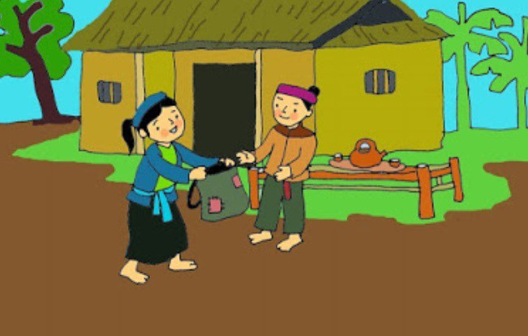
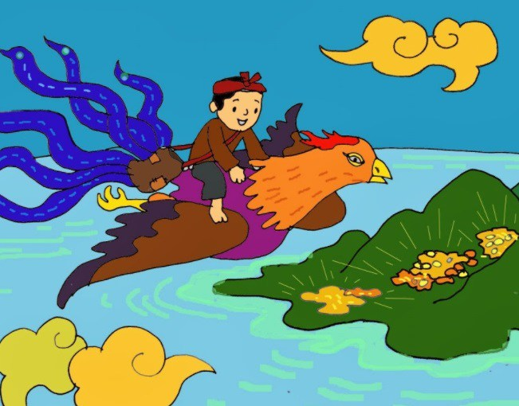
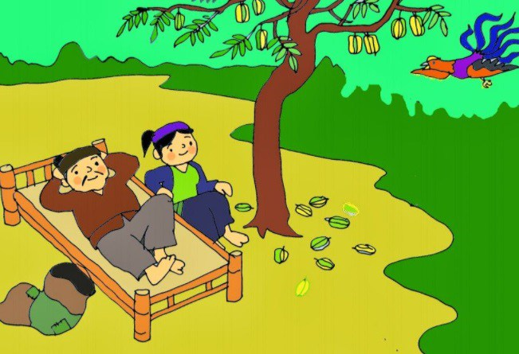
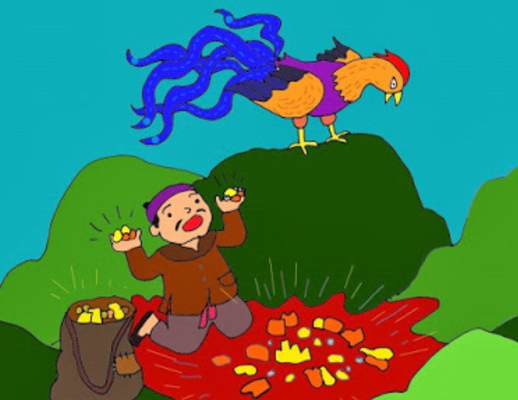

Truyện cổ tích: Cây Khế - Sự tích ăn khế trả vàng
Truyện cổ tích Cây khế hay sự tích ăn khế trả vàng là một câu truyện cổ tích Việt Nam kể về chuyện phân chia tài sản của 2 anh em và bài học ý nghĩa về sự tham lam của con người.
Ngày xửa, ngày xưa, có hai anh em nhà kia cha mẹ mất sớm để lại hai anh em nương tựa vào nhau. Người anh bản tính tham lam, ích kỷ còn người em thì lại hiền lành chất phác và luôn biết nhường nhịn. Khi 2 anh em lập gia đình, người anh muốn chia tài sản và ra ở riêng. Người anh tham lam lấy hết tất cả nhà cửa ruộng vườn, chỉ để lại cho vợ chồng người em một túp lều lụp xụp, trước nhà có 1 cây khế ngọt.
Người em không một lời ca thán, 2 vợ chồng dựng 1 túp lều nhỏ trên mảnh đất ấy và hết lòng chăm sóc cho cây khế. Cũng kể từ đó người anh không lui tới nhà người em nữa. Cây khế năm đó rất sai trái, quả nào quả nấy mọng nước và vàng ruộm. Người em phấn khởi chờ đến ngày đem khế đi bán để lấy tiền đong gạo.
Nhưng có một hôm, có một con chim lạ rất to bay tới ăn khế. Thấy chim ăn khế, người em bèn cầm một cây gậy đuổi đi, người em nói:
- Chim ơi chim, vợ chồng ta chỉ có một cây khế là tài sản. Chim ăn hết khế của ta rồi ta biết lấy gì mà sống?
Bỗng nhiên con chim lạ lên tiếng trả lời:
Ăn một quả,
Trả cục vàng,
May túi ba gang,
Mang đi mà đựng.
Hai vợ chồng người em nghe chim nói tiếng người thì thấy vô cùng kỳ lạ, nhưng người chồng vẫn bảo vợ may một chiếc túi ba gang như chim nói.

Ngày hôm sau, chim lại đến ăn khế, ăn xong chim bảo người em lên lưng và cõng bay đi. Chim cõng người em bay rất xa, bay qua một ngọn núi, bay qua một vùng biển rộng. Cuối cùng chim đáp xuống một hòn đảo hoang. Trên hòn đảo đầy châu báu, vàng bạc. Người em nghe theo lời chim lấy đủ số vàng bạc, châu báu đựng trong chiếc túi 3 gang rồi lên lưng chim bay trở về.

Từ đó trở đi, gia đình người em trở nên giàu có. Tiền bạc có nhiều, ăn không hết người em lấy ra để giúp đỡ những người nghèo trong làng. Cả làng ai cũng yêu quý người em. Thông tin nhà người em trở nên giàu có tới tai người anh. Người anh bèn tới hỏi thăm thì được người em kể tường tận câu chuyện chim ăn khế trả vàng. Nghe xong, lòng tham trong người anh nổi lên, anh ta bèn đòi đổi toàn bộ tài sản của mình để lấy mảnh vườn và cây khế của người em. Chiều lòng anh, người em đồng ý.
Từ đó, gia đình người anh sống tại túp lều trên mảnh vườn nhỏ và trông đợi vào cây khế.

Một hôm, chim lạ lại bay đến ăn khế, vợ chồng người anh giả nghèo giả khổ than khóc, chim lạ bèn trả lời:
Ăn một quả,
Trả cục vàng,
May túi ba gang,
Mang đi mà đựng.
Người anh mừng quá, giục vợ may túi nhưng không phải 3 gang mà là 12 gang để chờ chim tới đưa đi lấy vàng.

Hôm sau, chim thần tới chở người anh ra đảo hoang lấy vàng. Trên hòn đảo nhiều vàng bạc, châu báu làm hoa mắt người anh. Anh ta tham lam lấy vàng nhét đầy túi 12 gang, không những thế còn cố gắng lấy thêm vàng nhét vào người. Chim thần giục mãi anh ta mới chịu lên lưng chim để trở về.
Chim bay được giữa đường, càng bay càng thấy nặng, chim bảo người anh vất bớt vàng đi cho nhẹ nhưng người anh không chịu nghe. Chim dần đuối sức, bay đến giữa biển, vì quá nặng chim lảo đảo, nghiêng cánh khiến người anh cùng tất cả chỗ vàng rơi xuống biển sâu và bị sóng cuốn đi mất. Chim bay đi còn người anh tham lam ôm túi vàng chìm sâu xuống dưới biển.